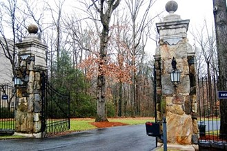
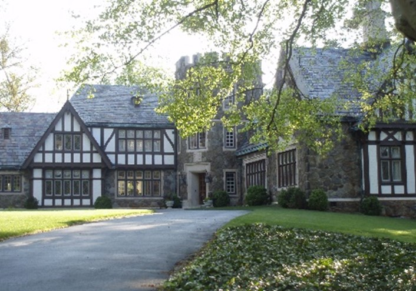
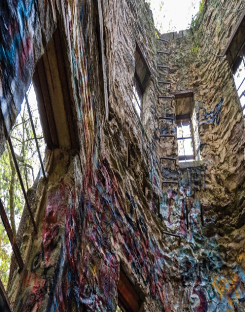
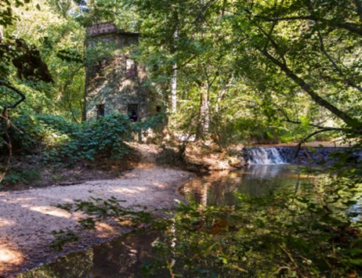
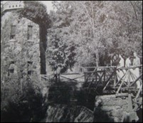
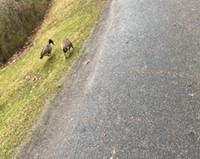
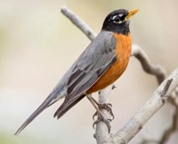
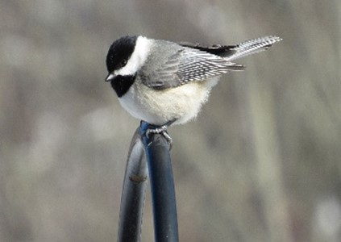
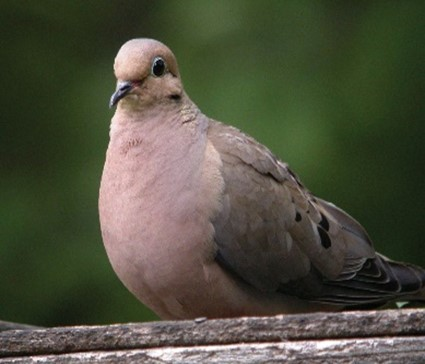

Passing through the weathered gates of Lullwater Preserve, I step into an endless array of trees. The vivid green and orange flood my cortex with an overwhelming rush of color and life. The rumbling of the cars fade away, the gate itself seems like a portal to a dimension shaped by the soft chirping of the birds that became louder as you got farther from the gate, pulling me deeper and deeper into the preserve, each note detangling the threads of my busy world until all I can think about is the peaceful rhythm of Lullwater and the quiet joy of others experiencing it with me.

Entrance to Lullwater Preserve
A Rich History
Beyond its immediate beauty, Lullwater holds a vast amount of history. Long before I crossed the gate, this land belonged to the Muscogee nation. In 1821, the land forming Lullwater was taken from the Muscogee nation and was placed in the highest bidder's hand. Over the ensuing decades, the land passed through different owners, until, in 1925, it was purchased by the Candler family under Walter Turner Candler. The same family that owned Coca-Cola eventually donated the original 75 acres that Emory University was founded on in Atlanta, upgrading Emory from a small college in Oxford, GA to a decently sized University. In 1958, the Candlers sell Lullwater to Emory University, this transaction also includes the Lullwater mansion where Emory's president lives in today.

Lullwater Mansion in Tudor-Gothic style
Exploring the Preserve
As I get further into Lullwater, the path diverges into 2 separate paths, each unraveling two different narratives of Lullwater. The upward path leads to the remnants of a previous era: the president's mansion, the old dam, and the weathered tower. The interior of the tower is marked by layers of graffiti and symbols by former and current Emory Students. The half-broken ladder inside stands as a testament to the passage of time the tower has faced. The remnants of the old dam sit right outside of the tower, barely recognizable from the days when it powered a good chunk of the Candlers estate.

Graffiti inside Candler Tower

Ruins of the dam and tower

Old dam and tower
The Vibrant Wildlife
In contrast, the downward path reveals a more vibrant and present leaning picture. It goes toward Candler Lake, home to beavers and different species of waterfowls, mainly geese and swans. Along its shoreline and general path there are also a vast number of birds, mainly American Robins, with a few Carolina Chickadees and Mourning Doves in the mix. The air is filled with the songs and calls of the Robins and Chickadees, while the song of the Mourning Dove is almost nonexistent. It allows students and visitors to completely relax, only focusing on the present.

Geese next to Candler Lake

American Robin
Click to hear the song

Carolina Chickadee
Click to hear the song

Mourning Dove
Click to hear the song
A Champion of Sustainability
Notably, Emory University is a highly rated gold ranked University by AASHE (Advancement of Sustainability in Higher Education), only 5.54 points away from being 1 of 14 other Universities to be a platinum member. This ranking is not random, from the moment of the Lullwater acquisition Emory has strived to keep the reserve looking beautiful. Emory also has scored a 3.48 in its landscape management skills (1.48/2) and biodiversity (2/2). A great feat when you factor in the enormous size of Lullwater, which is roughly 21% of Emory's total campus area alone (154 acres) and that this is an open park, not a restricted research site like other Universities preserve's.
Moreover, Emory has gotten a perfect 4/4 in its integration of sustainability in its curriculum and treating the campus as a living laboratory. As a student this means a lot to me as it not only keeps one of my many joys on campus beautiful and healthy, but it also shows to me that Emory truly cares about the Environment and Student experience.
A Personal Sanctuary
Lullwater helped me tremendously after my midterm exams this past month. I could sense each second that passed to the tea, it felt as if time itself decelerated for me. Allowing my stress to dissolve gradually. The chorus of the bird songs, the smell of the emerging pollen, and the quacking of ducks melded into a harmonious melody that replaced my lingering anxieties with a sense of stillness.
"...as little as 10-20 minutes of sitting and walking in a diverse array of natural settings has significant and positive impacts on key psychological and physiological markers, when contrasted with equal durations spent in urbanized settings."
Meredith et al.
A study published by Frontiers in Psychology supports this observation. The research indicates significant decreases in heart rate, salivary cortisol, blood pressure, negative POMS scores, decreased STAI scores, increased PANAS scores, and increased SD scores and positive POMS scores. POMS stands for "profile of mood states," STAI stands for "state-trait anxiety inventory" a way to measure how long anxiety lasts and how bad it is, SD stands for "subjective distress," and PANAS stands for "positive and negative affect schedule".
In my own subjective experience, I strongly agree with the studies findings as walking through Lullwater after my midterm week was over was refreshing and comforting. The combination of the ambience, the earthy scent of wood and soil, and the vibrant colors felt heavenly. Not only did I gradually feel the shackles of my anxieties and worries loosening as I kept moving, but my lungs felt like they could hold more air. As if my diaphragm was crushed due to the stress during the week, leaving it unable to fully expand.
A Living Testament
In conclusion, Lullwater is a living testament to the history of Emory, the Candler family, and even the U.S.A's colonization of the Natives land. This preserve doesn't only hold this history, it also holds the transformative effects it has on students lives. Validated by studies like Frontiers in Psychology, and my own personal student testament. For me, Lullwater is an indispensable part of Emory, without it I genuinely am not sure how well I would have coped with my midterms this past month.